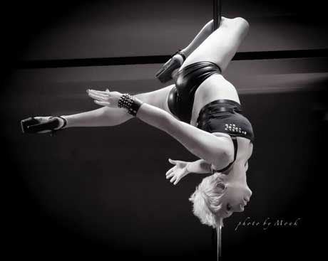
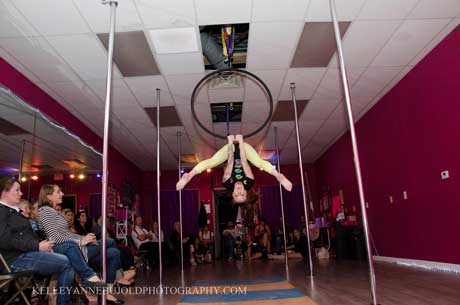
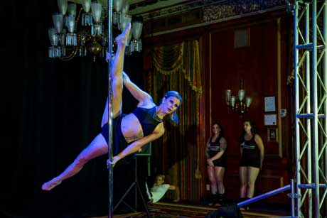
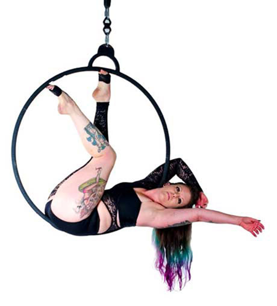

Tobin
Tobin Edmunds, owner of LOVE Pole Fitness and Aerial Arts, is a wife, mother, business owner, and pole athlete. Tobin began poling in 2010 and from the moment she touched that shiny chrome, she knew she was hooked! She has studied under Jamilla DeVille, Samantha Star, Karol Helms, and more. With two Pole Fitness certifications, Tobin enjoys teaching safe and challenging Pole Fitness classes.

Sierra
Sierra, aka LOVE Bunny started taking pole classes at LOVE in August of 2012. She had never taken dance, gymnastics, cheerleading or any other sport at all, but after her very first class she was hooked. It wasn’t so much the dancing or performance part that she was drawn to either. She fell in love with the sisterhood, having a sanctuary full of beautiful, strong and encouraging women, it was a place where she could feel comfortable with her body and learn how to own it.
Just a year after beginning pole she competed in her first real pole competition at Supershag 2013 in Boston and again in 2014. Around January/February 2014 she was first introduced to lyra (aerial hoop) and she was fascinated by it. Thanks to the skills and strength she had previously gained from pole, lyra came very easy for her and she couldn’t get enough!
She began teaching lyra and pole classes at LOVE in May of 2014 and in July of she got her Lyra Certification. In November 2014 she competed in the first lyra competition to come to Boston thanks to Pole Sport Organization where she placed second and one of her very own student placed first! To her, that’s the best part about teaching, watching her students’ progress and learns to fly. They set goals that for some people seem impossible to reach, and she gets to watch them surpass those goals every week.

Marissa
Marissa began dancing at the age of three and joined the competitive team at her childhood studio at age six. Since then Marissa has not been able to stop dancing. She continued to dance throughout college participating in Boston University's Dance Theater Group, a student run group that holds shows twice a year. Additionally she attended classes at BU and around the city in everything from jazz, tap, ballet, contemporary and Latin ballroom.
She has been teaching young students tap, jazz, and ballet for over 3 years now at a local dance studio. Marissa discovered pole in November of 2012 and instantly fell in love with this new art. She joined Love Pole Fitness as a student in July of 2013 and began instructing there last winter You can find her teaching Pole 1 and 2, Pole Silks, and her personal favorite Hips to Heels!
At Boston University, Marissa majored in Health Science and received her Masters in Public Health. She aims to work with youth to promote healthy nutrition and physical activity. Recently she met the national requirements to become a Certified Health Education Specialist. She enjoys being able to share her love for fitness and active living with her students.

Christine
Christine George AKA Panda, born in Honolulu Hawaii and currently a native to Massachusetts, is trained in contemporary and jazz dance. Christine is currently a certified personal trainer with the American Council on Exercise (ACE) as well as certified in Fly Gym Aerial Yoga, Aerial Hoop with Atmosphere Fitness, PiYo Live with Team Beachbody, ATL Bootyclap with Vertical Joe’s, and Pole Fitness certified with XPert XPole.
Over the last 3 years, Christine has had the privilege to compete in two pole fitness competitions, placing 7th in both Supershag 2013 and Atlantic Pole Championship in 2014. Christine is currently the Pole Sport Organization local representative for the Northeast Aerial Arts Championship held in Boston. Her #1 goal is to improve on her knowledge base for fun, skillful and safe classes and workshops. Her students are everything! Christine’s signature move is the Pinocchio; she loves shapes on the pole, heel clacking and floor to pole transitions.

Morgan
Morgan Wickert has been belly dancing since 2008. She has studied many styles including Greco-Turkish, Egyptian, American Trial Style, Gothic and Tribal Fusion. She currently teaches fusion belly dance; a blend of traditional belly dance, hip hop, flamenco, Indian and other styles of dance with emphasis on belly dance moves.

Chelsea
Chelsea Macary recently received her 500 hour yoga certification, studying under Marc St. Pierre on the North Shore. She has honed her skills in perfecting form and technique, while also learning to understand the aspects of the mind and body, as well as incorporating both flexibility and strength within her practice to be used in tandem with each other. Chelsea continues to dabble in all types of flows including Vinyasa, Anusara, and Power yoga, applying new methods and techniques to her own teachings.